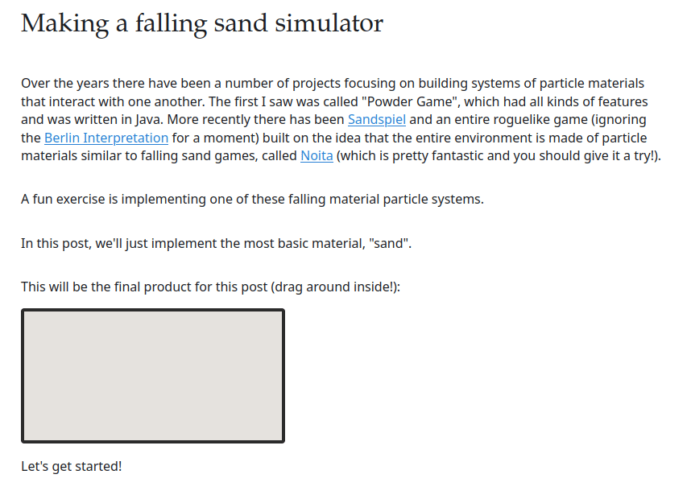

These are simple examples that were created at home to demonstrate
some of the benefits that Zig could have in production environments.
No production technology was harmed in the making of these slides.
What problem are we trying to solve?
160 frames x 2GB = 320GB Write & 320GB Read
160 frames x 2GB = 320GB Write & 320GB Read
Across 10 shots with 2 iterations a day
160 frames x 2GB = 320GB Write & 320GB Read
Across 10 shots with 2 iterations a day
12.8TB of I/O per day for some sand
What problem are we trying to solve?
What problem are we trying to solve?
Data Storage and I/O
Data Storage and I/O
How can Zig help?
typedef short RtBoolean;
typedef float RtFloat;
typedef int RtInt;
typedef int RtError;
typedef float RtColor[3];
typedef float RtPoint[3];typedef short RtBoolean;
typedef float RtFloat;
typedef int RtInt;
typedef int RtError;
typedef float RtColor[3];
typedef float RtPoint[3];
RI_EXPORT void RiPoints(int nverts, ...);
RI_EXPORT void RiPointsV(int nverts, int n, RtToken nms[],
RtPointer vals[]);
RI_EXPORT void RiPointsGeneralPolygons(int npolys,
int* nloops, int* nverts, int* verts, ...);
RI_EXPORT void RiPointsGeneralPolygonsV(int npolys,
int* nloops, int* nverts, int* verts, int n,
RtToken nms[], RtPointer vals[]);
// ri.zig
pub const Float = f32;
pub const Point = [3]Float;
pub const Color = [3]Float;
pub const Int = i32;
pub const Token = ?[*:0]const u8;
pub const Pointer = ?*anyopaque;
pub const NULL: Pointer = null;
pub extern fn RiPoints(nverts: Int, ...) callconv(.C) void;
pub extern fn RiPointsV(nverts: Int, n: Int, nms: [*]Token, vals: [*]Pointer) callconv(.C) void;
pub extern fn RiSphere(radius: Float, zmin: Float, zmax: Float, tmax: Float, ...) callconv(.C) void;
const std = @import("std");
const ri = @import("ri.zig");
const noise = @import("noise.zig");
pub export fn Subdivide2(
ctx: *anyopaque,
detail: ri.Float,
n: ri.Int,
toks: [*]ri.Token,
vals: [*]ri.Pointer,
) void {
_ = ctx;
_ = detail;
var prng = std.rand.DefaultPrng.init(42);
const rand = prng.random();
var num_points: i32 = 5000;
// Procedural2 "DynamicLoad2" "SimpleBound" "constant float[6] __bound" [-5 5 0.0 0.5 -5 5]
// "constant string __dsoname" ["libptgen.so"]
// "constant int num_points" [100000000]
for (toks[0..@intCast(usize, n)]) |_, i| {
var tok = toks[i] orelse continue;
var val = vals[i] orelse continue;
var iter = std.mem.split(u8, std.mem.span(tok), " ");
var token_type = iter.next() orelse continue;
var token_name = iter.next() orelse continue;
if (std.mem.eql(u8, token_type, "int") and
std.mem.eql(u8, token_name, "num_points"))
{
num_points = @ptrCast(*i32, @alignCast(@alignOf(i32), val)).*;
}
}
const P_token: ri.Token = "P";
const falloff_token: ri.Token = "constant float falloffpower";
const width_token: ri.Token = "varying float width";
const ids_token: ri.Token = "varying float id";
var tokens = [4]ri.Token{ P_token, width_token, falloff_token, ids_token };
var values: [4]ri.Pointer = .{null} ** 4;
var falloff: ri.Float = 1.0;
const allocator = std.heap.page_allocator;
var pts = allocator.alloc(ri.Point, @intCast(usize, num_points)) catch return;
defer allocator.free(pts);
var ids = allocator.alloc(f32, @intCast(usize, num_points)) catch return;
defer allocator.free(ids);
var widths = allocator.alloc(f32, @intCast(usize, num_points)) catch return;
defer allocator.free(widths);
for (pts) |*pt, i| {
var x_pos: ri.Float = (rand.float(ri.Float) - 0.5) * 10;
var y_pos: ri.Float = rand.float(ri.Float);
var z_pos: ri.Float = (rand.float(ri.Float) - 0.5) * 10;
pt.* = ri.Point{
x_pos,
//(@cos(x_pos * std.math.pi) + y_pos) * 0.2,
@floatCast(f32, (noise.improvedPerlin(x_pos, 0.5, z_pos) + y_pos) * 0.225),
z_pos,
};
ids[i] = @intToFloat(f32, i);
widths[i] = rand.float(ri.Float) * 0.0025 + 0.005;
}
values[0] = @as(ri.Pointer, pts.ptr);
values[1] = @as(ri.Pointer, widths.ptr);
values[2] = @as(ri.Pointer, &falloff);
values[3] = @as(ri.Pointer, ids.ptr);
ri.RiPointsV(num_points, tokens.len, &tokens, &values);
}
/// Improved Perlin Noise from
/// https://cs.nyu.edu/~perlin/noise/
/// http://mrl.nyu.edu/~perlin/paper445.pdf
pub fn improvedPerlin(x: f64, y: f64, z: f64) f64 {
const fx = @floor(x);
const fy = @floor(y);
const fz = @floor(z);
const dx = x - fx;
const dy = y - fy;
const dz = z - fz;
const permutation_mask = @intCast(u32, noise_permutation_size - 1);
const ix = @intCast(u32, @floatToInt(i32, fx) & permutation_mask);
const iy = @intCast(u32, @floatToInt(i32, fy) & permutation_mask);
const iz = @intCast(u32, @floatToInt(i32, fz) & permutation_mask);
const wx = fade(dx);
const wy = fade(dy);
const wz = fade(dz);
// zig fmt: off
const w000 = grad(ix, iy, iz, dx, dy, dz);
const w100 = grad(ix+1, iy, iz, dx-1, dy, dz);
const w010 = grad(ix, iy+1, iz, dx, dy-1, dz);
const w110 = grad(ix+1, iy+1, iz, dx-1, dy-1, dz);
const w001 = grad(ix, iy, iz+1, dx, dy, dz-1);
const w101 = grad(ix+1, iy, iz+1, dx-1, dy, dz-1);
const w011 = grad(ix, iy+1, iz+1, dx, dy-1, dz-1);
const w111 = grad(ix+1, iy+1, iz+1, dx-1, dy-1, dz-1);
// zig fmt: on
const w00 = lerp(wx, w000, w100);
const w10 = lerp(wx, w010, w110);
const w01 = lerp(wx, w001, w101);
const w11 = lerp(wx, w011, w111);
const w0 = lerp(wy, w00, w10);
const w1 = lerp(wy, w01, w11);
return lerp(wz, w0, w1);
}
fn fade(v: f64) f64 {
return v * v * v * (v * (v * 6.0 - 15.0) + 10.0);
}
fn lerp(amount: f64, v0: f64, v1: f64) f64 {
return v0 + amount * (v1 - v0);
}
fn grad(ix: u32, iy: u32, iz: u32, x: f64, y: f64, z: f64) f64 {
const hash = noise_permutation[noise_permutation[noise_permutation[ix] + iy] + iz];
// zig fmt: off
switch (hash & 15) {
0 => return x + y,
1 => return -x + y,
2 => return x - y,
3 => return -x - y,
4 => return x + z,
5 => return -x + z,
6 => return x - z,
7 => return -x - z,
8 => return y + z,
9 => return -y + z,
10 => return y - z,
11 => return -y - z,
12 => return x + y,
13 => return -x + y,
14 => return -y + z,
15 => return -y - z,
else => unreachable,
}
// zig fmt: on
unreachable;
}
// zig fmt: off
const noise_permutation = [_]u32{
151, 160, 137, 91, 90, 15, 131, 13, 201, 95, 96, 53, 194, 233, 7, 225, 140,
36, 103, 30, 69, 142, 8, 99, 37, 240, 21, 10, 23, 190, 6, 148, 247, 120, 234,
75, 0, 26, 197, 62, 94, 252, 219, 203, 117, 35, 11, 32, 57, 177, 33, 88, 237,
149, 56, 87, 174, 20, 125, 136, 171, 168, 68, 175, 74, 165, 71, 134, 139,
48, 27, 166, 77, 146, 158, 231, 83, 111, 229, 122, 60, 211, 133, 230, 220,
105, 92, 41, 55, 46, 245, 40, 244, 102, 143, 54, 65, 25, 63, 161, 1, 216, 80,
73, 209, 76, 132, 187, 208, 89, 18, 169, 200, 196, 135, 130, 116, 188, 159,
86, 164, 100, 109, 198, 173, 186, 3, 64, 52, 217, 226, 250, 124, 123, 5,
202, 38, 147, 118, 126, 255, 82, 85, 212, 207, 206, 59, 227, 47, 16, 58, 17,
182, 189, 28, 42, 223, 183, 170, 213, 119, 248, 152, 2, 44, 154, 163, 70,
221, 153, 101, 155, 167, 43, 172, 9, 129, 22, 39, 253, 19, 98, 108, 110, 79,
113, 224, 232, 178, 185, 112, 104, 218, 246, 97, 228, 251, 34, 242, 193,
238, 210, 144, 12, 191, 179, 162, 241, 81, 51, 145, 235, 249, 14, 239, 107,
49, 192, 214, 31, 181, 199, 106, 157, 184, 84, 204, 176, 115, 121, 50, 45,
127, 4, 150, 254, 138, 236, 205, 93, 222, 114, 67, 29, 24, 72, 243, 141,
128, 195, 78, 66, 215, 61, 156, 180
}**2;
// zig fmt: on
const noise_permutation_size = noise_permutation.len / 2;
Procedural2 "DynamicLoad2" "SimpleBound" "constant float[6] __bound" [-5 5 0.0478762165 0.404067099 -5 5]
"constant string __dsoname" ["./lib/libptgen.so"]
"constant int num_points" [100000000]
Procedural2 "DynamicLoad2" "SimpleBound" "constant float[6] __bound" [-5 5 -0.5 0.5 -5 5]
"constant string __dsoname" ["./lib/libhengine.so"]
"constant float radius" [0.100000001]
"constant string otl_path" ["./otls/sand_dunes.hdalc"]
"constant string asset_name" ["Sop/sand_dunes"]
"constant int npts" [50000000]
"constant float scale" [0.100000001]
"constant float size" [10]
"constant float thickness" [0.0199999996]
"constant color clr" [1 1 1]
"constant string tex" ["./tex/zig-mark.rat"]
"constant int relax" [1]
typedef HAPI_Int64 HAPI_SessionId;
typedef int HAPI_StringHandle;
typedef int HAPI_AssetLibraryId;
typedef int HAPI_NodeId;
typedef int HAPI_ParmId;
struct HAPI_API HAPI_Session
{
HAPI_SessionType type;
HAPI_SessionId id;
};
HAPI_C_STRUCT_TYPEDEF( HAPI_Session )
HAPI_DECL HAPI_CreateInProcessSession( HAPI_Session * session );
HAPI_DECL HAPI_IsSessionValid( const HAPI_Session * session );
HAPI_DECL HAPI_CreateNode( const HAPI_Session * session,
HAPI_NodeId parent_node_id,
const char * operator_name,
const char * node_label,
HAPI_Bool cook_on_creation,
HAPI_NodeId * new_node_id );
HAPI_DECL HAPI_CookNode( const HAPI_Session * session,
HAPI_NodeId node_id,
const HAPI_CookOptions * cook_options );
const std = @import("std");
const ri = @import("ri.zig");
const c = @cImport({
@cInclude("HAPI/HAPI.h");
});
const pipe_name = "zig_engine";
fn hasAsset(
allocator: std.mem.Allocator,
session: *const c.HAPI_Session,
library_id: c.HAPI_AssetLibraryId,
asset_name: [:0]const u8,
) bool {
var result: c.HAPI_Result = undefined;
var asset_count: i32 = undefined;
result = c.HAPI_GetAvailableAssetCount(session, library_id, &asset_count);
if (result > c.HAPI_RESULT_SUCCESS or asset_count == 0) return false;
var name_handles = allocator.alloc(
c.HAPI_StringHandle,
@intCast(usize, asset_count),
) catch return false;
result = c.HAPI_GetAvailableAssets(session, library_id, name_handles.ptr, asset_count);
// Assume our asset names (including \0) will be less than 128 chars
var buffer: [128]u8 = undefined;
for (name_handles) |handle| {
var name_len: i32 = undefined;
result = c.HAPI_GetStringBufLength(session, handle, &name_len);
std.debug.assert(name_len <= buffer.len);
result = c.HAPI_GetString(session, handle, &buffer, name_len);
// name_len includes \0
var name = buffer[0 .. @intCast(usize, name_len) - 1 :0];
if (std.mem.eql(u8, name, asset_name)) return true;
}
return false;
}
pub export fn Subdivide2(
ctx: *anyopaque,
detail: ri.Float,
num_tokens: ri.Int,
toks: [*]ri.Token,
vals: [*]ri.Pointer,
) void {
_ = ctx;
_ = detail;
var otl_path: [:0]const u8 = "";
var asset_name: [:0]const u8 = "";
for (toks[0..@intCast(usize, num_tokens)]) |_, tok_i| {
var tok = toks[tok_i] orelse continue;
var val = vals[tok_i] orelse continue;
var iter = std.mem.split(u8, std.mem.span(tok), " ");
var token_type = iter.next() orelse continue;
var token_name = iter.next() orelse continue;
if (std.mem.eql(u8, token_type, "string") and
std.mem.eql(u8, token_name, "otl_path"))
{
var ptr = @ptrCast(?*const ri.Token, @alignCast(@alignOf(ri.Token), val)) orelse continue;
otl_path = std.mem.span(ptr.*) orelse continue;
} else if (std.mem.eql(u8, token_type, "string") and
std.mem.eql(u8, token_name, "asset_name"))
{
var ptr = @ptrCast(?*const ri.Token, @alignCast(@alignOf(ri.Token), val)) orelse continue;
asset_name = std.mem.span(ptr.*) orelse continue;
}
}
if (otl_path.len == 0) {
std.debug.print("Missing otl_path\n", .{});
return;
}
if (asset_name.len == 0) {
std.debug.print("Missing asset_name\n", .{});
return;
}
var arena = std.heap.ArenaAllocator.init(std.heap.page_allocator);
defer arena.deinit();
const allocator = arena.allocator();
var session: c.HAPI_Session = undefined;
var result: c.HAPI_Result = undefined;
const in_process = true;
if (in_process) {
// In Houdini 19.0 there is an issue where an In Process Session will crash if not Shutdown()
// (which was added in 19.0.507).
// However there is still a lingering bug (fixed in 19.5) where the Shutdown method will crash
// if linked against HAPIL. Linking against HAPI is fine.
result = c.HAPI_CreateInProcessSession(&session);
} else {
const thrift_options = c.HAPI_ThriftServerOptions{ .autoClose = 1, .timeoutMs = 3000.0 };
result = c.HAPI_StartThriftNamedPipeServer(&thrift_options, pipe_name, null);
result = c.HAPI_CreateThriftNamedPipeSession(&session, pipe_name);
}
var cook_options = c.HAPI_CookOptions_Create();
result = c.HAPI_Initialize(&session, &cook_options, 1, -1, null, null, null, null, null);
defer {
result = c.HAPI_Cleanup(&session);
if (in_process) result = c.HAPI_Shutdown(&session);
result = c.HAPI_CloseSession(&session);
}
var library_id: c.HAPI_AssetLibraryId = undefined;
result = c.HAPI_LoadAssetLibraryFromFile(&session, otl_path.ptr, 1, &library_id);
if (!hasAsset(allocator, &session, library_id, asset_name)) {
std.debug.print("Asset does not exist\n", .{});
return;
}
var node_id: c.HAPI_NodeId = undefined;
result = c.HAPI_CreateNode(&session, -1, asset_name.ptr, null, 0, &node_id);
std.debug.print("result: {}\n", .{result});
// Apply parameters
for (toks[0..@intCast(usize, num_tokens)]) |_, tok_i| {
var tok = toks[tok_i] orelse continue;
var val = vals[tok_i] orelse continue;
var iter = std.mem.split(u8, std.mem.span(tok), " ");
var token_type = iter.next() orelse continue;
var token_name = iter.next() orelse continue;
var parm_info: c.HAPI_ParmInfo = undefined;
result = c.HAPI_GetParmInfoFromName(&session, node_id, token_name.ptr, &parm_info);
if (result > c.HAPI_RESULT_SUCCESS) continue;
std.debug.print("{s}: ", .{token_name});
if (std.mem.eql(u8, token_type, "string")) {
std.debug.print("string\n", .{});
var ptr = @ptrCast(?*const ri.Token, @alignCast(@alignOf(ri.Token), val)) orelse continue;
if (parm_info.type >= c.HAPI_PARMTYPE_STRING_START and parm_info.type <= c.HAPI_PARMTYPE_STRING_END and parm_info.size == 1) {
result = c.HAPI_SetParmStringValue(&session, node_id, ptr.*, parm_info.id, 0);
}
} else if (std.mem.eql(u8, token_type, "int")) {
std.debug.print("int\n", .{});
var ptr = @ptrCast(?*const i32, @alignCast(@alignOf(i32), val)) orelse continue;
if (parm_info.type >= c.HAPI_PARMTYPE_INT_START and parm_info.type <= c.HAPI_PARMTYPE_INT_END and parm_info.size == 1) {
result = c.HAPI_SetParmIntValue(&session, node_id, token_name.ptr, 0, ptr.*);
}
} else if (std.mem.eql(u8, token_type, "float")) {
std.debug.print("float\n", .{});
var ptr = @ptrCast(?*const f32, @alignCast(@alignOf(f32), val)) orelse continue;
if (parm_info.type == c.HAPI_PARMTYPE_FLOAT and parm_info.size == 1) {
result = c.HAPI_SetParmFloatValue(&session, node_id, token_name.ptr, 0, ptr.*);
}
} else if (std.mem.eql(u8, token_type, "point") or
std.mem.eql(u8, token_type, "vector") or
std.mem.eql(u8, token_type, "normal") or
std.mem.eql(u8, token_type, "color"))
{
std.debug.print("float[3]\n", .{});
var ptr = @ptrCast(?*const [3]f32, @alignCast(@alignOf(f32), val)) orelse continue;
if (parm_info.type >= c.HAPI_PARMTYPE_FLOAT_START and parm_info.type <= c.HAPI_PARMTYPE_FLOAT_END and parm_info.size == 3) {
for (ptr.*) |v, i| {
result = c.HAPI_SetParmFloatValue(&session, node_id, token_name.ptr, @intCast(i32, i), v);
}
}
} else {
std.debug.print("unknown\n", .{});
continue;
}
}
result = c.HAPI_CookNode(&session, node_id, &cook_options);
var cook_result: c.HAPI_Result = c.HAPI_RESULT_SUCCESS;
var cook_status = c.HAPI_STATE_MAX;
while (cook_status > c.HAPI_STATE_MAX_READY_STATE and cook_result == c.HAPI_RESULT_SUCCESS) {
// In the HAPI examples there is no sleep but instead of repeatedly checking we can
// wait for what is considered a "fast" cook.
std.time.sleep(30 * std.time.ns_per_ms);
cook_result = c.HAPI_GetStatus(
&session,
c.HAPI_STATUS_COOK_STATE,
&cook_status,
);
}
var part_id: c.HAPI_PartId = 0;
var geo_info: c.HAPI_GeoInfo = undefined;
result = c.HAPI_GetDisplayGeoInfo(&session, node_id, &geo_info);
std.debug.print("Part count: {}\n", .{geo_info.partCount});
var part_info: c.HAPI_PartInfo = undefined;
result = c.HAPI_GetPartInfo(&session, node_id, part_id, &part_info);
if (part_info.pointCount == 0) {
std.debug.print("Warning no points in geometry\n", .{});
return;
}
std.debug.print("Point count: {}\n", .{part_info.pointCount});
var attrib_names = allocator.alloc(
c.HAPI_StringHandle,
@intCast(usize, part_info.attributeCounts[c.HAPI_ATTROWNER_POINT]),
) catch return;
result = c.HAPI_GetAttributeNames(
&session,
node_id,
part_id,
c.HAPI_ATTROWNER_POINT,
attrib_names.ptr,
part_info.attributeCounts[c.HAPI_ATTROWNER_POINT],
);
var tokens = std.ArrayList(ri.Token).init(allocator);
var values = std.ArrayList(ri.Pointer).init(allocator);
for (attrib_names) |handle| {
var buf_len: i32 = undefined;
result = c.HAPI_GetStringBufLength(&session, handle, &buf_len);
var name = allocator.allocSentinel(
u8,
@intCast(usize, buf_len - 1),
0,
) catch continue;
result = c.HAPI_GetString(&session, handle, name.ptr, buf_len);
if (std.mem.startsWith(u8, name, "__")) continue;
var attrib_info: c.HAPI_AttributeInfo = undefined;
result = c.HAPI_GetAttributeInfo(
&session,
node_id,
part_id,
name.ptr,
c.HAPI_ATTROWNER_POINT,
&attrib_info,
);
// Skip array attributes (f[]@name vs v@name)
if (attrib_info.totalArrayElements > 0)
continue;
// Only support float PODs for now
if (attrib_info.storage != c.HAPI_STORAGETYPE_FLOAT)
continue;
var rtype: [:0]const u8 = undefined;
const qualifier = "varying";
switch (attrib_info.typeInfo) {
c.HAPI_ATTRIBUTE_TYPE_NONE => rtype = "float",
c.HAPI_ATTRIBUTE_TYPE_POINT => rtype = "point",
c.HAPI_ATTRIBUTE_TYPE_VECTOR => rtype = "vector",
c.HAPI_ATTRIBUTE_TYPE_NORMAL => rtype = "normal",
c.HAPI_ATTRIBUTE_TYPE_COLOR => rtype = "color",
else => continue,
}
var fdata = allocator.alloc(
f32,
@intCast(usize, attrib_info.count * attrib_info.tupleSize),
) catch continue;
result = c.HAPI_GetAttributeFloatData(
&session,
node_id,
part_id,
name.ptr,
&attrib_info,
-1,
fdata.ptr,
0,
attrib_info.count,
);
var rtoken: [:0]const u8 = undefined;
if (std.mem.eql(u8, name, "P")) {
// We set it to P instead of using name, since the name handle will expire next time
// HAPI_GetAttributeNames is called.
rtoken = "P";
} else {
rtoken = std.mem.joinZ(
allocator,
" ",
&[_][:0]const u8{ qualifier, rtype, name },
) catch continue;
}
tokens.append(rtoken) catch continue;
values.append(@ptrCast(ri.Pointer, fdata.ptr)) catch continue;
std.debug.print("\t{s}\n", .{rtoken});
std.debug.print("\tsize: {}\n", .{attrib_info.tupleSize});
}
ri.RiPointsV(
part_info.pointCount,
@intCast(i32, tokens.items.len),
tokens.items.ptr,
values.items.ptr,
);
}
Procedural2 "DynamicLoad2" "SimpleBound" "constant float[6] __bound" [-5 5 -0.5 0.5 -5 5]
"constant string __dsoname" ["./lib/libhengine.so"]
"constant float radius" [0.100000001]
"constant string otl_path" ["./otls/sand_dunes.hdalc"]
"constant string asset_name" ["Sop/sand_dunes"]
"constant int npts" [50000000]
"constant float scale" [0.100000001]
"constant float size" [10]
"constant float thickness" [0.0199999996]
"constant color clr" [1 1 1]
"constant string tex" ["./tex/zig-mark.rat"]
"constant int relax" [1]
var session: c.HAPI_Session = undefined;
result = c.HAPI_CreateInProcessSession(&session);
After
var session = try hapi.createInProcessSession();
var session = try hapi.createInProcessSession();
extern fn HAPI_CreateInProcessSession(session: *types.Session) types.Result;
pub fn createInProcessSession() ResultError!types.Session {
var session: types.Session = undefined;
var result = HAPI_CreateInProcessSession(&session);
switch (result) {
.success => return session,
else => return resultToError(result),
}
}
pub const Result = enum(u32) {
success = 0,
failure = 1,
already_initialized = 2,
not_initialized = 3,
cant_loadfile = 4,
parm_set_failed = 5,
invalid_argument = 6,
cant_load_geo = 7,
cant_generate_preset = 8,
cant_load_preset = 9,
asset_def_already_loaded = 10,
no_license_found = 110,
disallowed_nc_license_found = 120,
disallowed_nc_asset_with_c_license_found = 130,
disallowed_nc_asset_with_lc_license_found = 140,
disallowed_lc_asset_with_c_license_found = 150,
disallowed_hengine_indie_w_3party_plugin = 160,
asset_invalid = 200,
node_invalid = 210,
user_interrupted = 300,
invalid_session = 400,
};
pub const ResultError = error{
Failure,
AlreadyInitialized,
NotInitialized,
CantLoadFile,
ParmSetFailed,
InvalidArgument,
CantLoadGeo,
CantGeneratePreset,
CantLoadPreset,
AssetDefAlreadyLoaded,
NoLicenseFound,
DisallowedNCLicenseFound,
DisallowedNCAssetWithCLicenseFound,
DisallowedNCAssetWithLCLicenseFound,
DisallowedLCAssetWithCLicenseFound,
DisallowedHEngineIndieW3PartyPlugin,
AssetInvalid,
NodeInvalid,
UserInterrupted,
InvalidSession,
};
inline fn resultToError(result: types.Result) ResultError {
switch (result) {
.failure => return ResultError.Failure,
.already_initialized => return ResultError.AlreadyInitialized,
.not_initialized => return ResultError.NotInitialized,
.cant_loadfile => return ResultError.CantLoadFile,
.parm_set_failed => return ResultError.ParmSetFailed,
.invalid_argument => return ResultError.InvalidArgument,
.cant_load_geo => return ResultError.CantLoadGeo,
.cant_generate_preset => return ResultError.CantGeneratePreset,
.cant_load_preset => return ResultError.CantLoadPreset,
.asset_def_already_loaded => return ResultError.AssetDefAlreadyLoaded,
.no_license_found => return ResultError.NoLicenseFound,
.disallowed_nc_license_found => return ResultError.DisallowedNCLicenseFound,
.disallowed_nc_asset_with_c_license_found => return ResultError.DisallowedNCAssetWithCLicenseFound,
.disallowed_nc_asset_with_lc_license_found => return ResultError.DisallowedNCAssetWithLCLicenseFound,
.disallowed_lc_asset_with_c_license_found => return ResultError.DisallowedLCAssetWithCLicenseFound,
.disallowed_hengine_indie_w_3party_plugin => return ResultError.DisallowedHEngineIndieW3PartyPlugin,
.asset_invalid => return ResultError.AssetInvalid,
.node_invalid => return ResultError.NodeInvalid,
.user_interrupted => return ResultError.UserInterrupted,
.invalid_session => return ResultError.InvalidSession,
else => unreachable,
}
}
if (parm_info.type >= c.HAPI_PARMTYPE_STRING_START and parm_info.type <= c.HAPI_PARMTYPE_STRING_END and parm_info.size == 1) {
result = c.HAPI_SetParmStringValue(&session, node_id, ptr.*, parm_info.id, 0);
}
if (parm_info.type >= c.HAPI_PARMTYPE_STRING_START and parm_info.type <= c.HAPI_PARMTYPE_STRING_END and parm_info.size == 1) {
result = c.HAPI_SetParmStringValue(&session, node_id, ptr.*, parm_info.id, 0);
}
enum HAPI_ParmType
{
HAPI_PARMTYPE_INT = 0,
HAPI_PARMTYPE_MULTIPARMLIST,
HAPI_PARMTYPE_TOGGLE,
HAPI_PARMTYPE_BUTTON,
HAPI_PARMTYPE_FLOAT,
HAPI_PARMTYPE_COLOR,
HAPI_PARMTYPE_STRING,
HAPI_PARMTYPE_PATH_FILE,
HAPI_PARMTYPE_PATH_FILE_GEO,
HAPI_PARMTYPE_PATH_FILE_IMAGE,
HAPI_PARMTYPE_NODE,
HAPI_PARMTYPE_FOLDERLIST,
HAPI_PARMTYPE_FOLDERLIST_RADIO,
HAPI_PARMTYPE_FOLDER,
HAPI_PARMTYPE_LABEL,
HAPI_PARMTYPE_SEPARATOR,
HAPI_PARMTYPE_PATH_FILE_DIR,
// Helpers
HAPI_PARMTYPE_MAX,
HAPI_PARMTYPE_INT_START = HAPI_PARMTYPE_INT,
HAPI_PARMTYPE_INT_END = HAPI_PARMTYPE_BUTTON,
HAPI_PARMTYPE_FLOAT_START = HAPI_PARMTYPE_FLOAT,
HAPI_PARMTYPE_FLOAT_END = HAPI_PARMTYPE_COLOR,
HAPI_PARMTYPE_STRING_START = HAPI_PARMTYPE_STRING,
HAPI_PARMTYPE_STRING_END = HAPI_PARMTYPE_NODE,
HAPI_PARMTYPE_PATH_START = HAPI_PARMTYPE_PATH_FILE,
HAPI_PARMTYPE_PATH_END = HAPI_PARMTYPE_PATH_FILE_IMAGE,
HAPI_PARMTYPE_NODE_START = HAPI_PARMTYPE_NODE,
HAPI_PARMTYPE_NODE_END = HAPI_PARMTYPE_NODE,
HAPI_PARMTYPE_CONTAINER_START = HAPI_PARMTYPE_FOLDERLIST,
HAPI_PARMTYPE_CONTAINER_END = HAPI_PARMTYPE_FOLDERLIST_RADIO,
HAPI_PARMTYPE_NONVALUE_START = HAPI_PARMTYPE_FOLDER,
HAPI_PARMTYPE_NONVALUE_END = HAPI_PARMTYPE_SEPARATOR
};
pub const ParmType = enum(u32) {
int = 0,
multiparmlist,
toggle,
button,
float,
color,
string,
path_file,
path_file_geo,
path_file_image,
node,
folderlist,
folderlist_radio,
folder,
label,
separator,
path_file_dir,
max,
// HAPI 4.2 has "helpers" in the form of
// int_start = int
// int_end = button
// we'll duplicate the spirit of that using functions on the enum.
pub fn isInt(e: ParmType) bool {
switch (e) {
.int, .multiparmlist, .toggle, .button => return true,
else => return false,
}
}
pub fn isFloat(e: ParmType) bool {
switch (e) {
.float, .color => return true,
else => return false,
}
}
pub fn isString(e: ParmType) bool {
// in HAPI 4.2, path_file_dir isn't considered a string (wrongly)
switch (e) {
.string, .path_file, .path_file_geo, .path_file_image, .path_file_dir, .node => return true,
else => return false,
}
}
pub fn isPath(e: ParmType) bool {
switch (e) {
.path_file, .path_file_geo, .path_file_image, .path_file_dir => return true,
else => return false,
}
}
pub fn isNode(e: ParmType) bool {
switch (e) {
.node => return true,
else => return false,
}
}
pub fn isContainer(e: ParmType) bool {
switch (e) {
.folderlist, .folderlist_radio => return true,
else => return false,
}
}
pub fn isNonValue(e: ParmType) bool {
switch (e) {
.folder, .label, .separator => return true,
else => return false,
}
}
};
if (parm_info.type >= c.HAPI_PARMTYPE_STRING_START and parm_info.type <= c.HAPI_PARMTYPE_STRING_END and parm_info.size == 1) {
result = c.HAPI_SetParmStringValue(&session, node_id, ptr.*, parm_info.id, 0);
}
After
if (parm_info.type.isString() and parm_info.size == 1) {
try hapi.setParmStringValue(session, node_id, ptr, parm_info.id, 0);
}
result = c.HAPI_GetString(&session, handle, string.ptr, string.len);
After
try hapi.getString(session, handle, string);
var session = try hapi.createInProcessSession();
var cook_options = hapi.CookOptions.create();
try hapi.initialize(&session, &cook_options, false, -1, null, null, null, null, null);
defer {
if (hapi.isInitialized(session)) {
hapi.cleanup(session) catch std.debug.print("cleanup failed\n", .{});
hapi.shutdown(session) catch std.debug.print("shutdown failed\n", .{});
hapi.closeSession(&session) catch std.debug.print("closeSession failed\n", .{});
}
}
var asset_library_id = try hapi.loadAssetLibraryFromFile(session, "otls/test_asset.hdalc", false);
var num_assets = try hapi.getAvailableAssetCount(session, asset_library_id);
var handle_buf = [_]hapi.StringHandle{0} ** 16;
var string_buf = [_]u8{0} ** 256;
var handles: []hapi.StringHandle = undefined;
var string: []u8 = undefined;
handles = handle_buf[0..num_assets];
try hapi.getAvailableAssets(session, asset_library_id, handles);
var string_len = try hapi.getStringBufLength(session, handles[0]);
string = string_buf[0..string_len];
try hapi.getString(session, handles[0], string);
var node_id = try hapi.createNode(session, -1, string, null, false);
var parm_info = try hapi.getParmInfoFromName(session, node_id, "str_parm");
try hapi.setParmStringValue(session, node_id, "hello", parm_info.id, 0);
try hapi.setParmIntValue(session, node_id, "int_parm", 0, 42);
try hapi.setParmFloatValue(session, node_id, "flt_parm", 0, 42.0);
try hapi.setParmFloatValue(session, node_id, "clr_parm", 2, 42.0);
try hapi.cookNode(session, node_id, null);

const std = @import("std");
const curl = @cImport(
@cInclude("curl/curl.h"),
);
pub fn request(
allocator: std.mem.Allocator,
post: ?[]const u8,
url: []const u8,
) !std.ArrayList(u8) {
if (curl.curl_global_init(curl.CURL_GLOBAL_ALL) != curl.CURLE_OK)
return error.CURLGlobalInitFailed;
defer curl.curl_global_cleanup();
const handle = curl.curl_easy_init() orelse return error.CURLHandleInitFailed;
defer curl.curl_easy_cleanup(handle);
var response_buffer = std.ArrayList(u8).init(allocator);
errdefer response_buffer.deinit();
if (curl.curl_easy_setopt(handle, curl.CURLOPT_URL, url.ptr) != curl.CURLE_OK)
return error.CouldNotSetURL;
if (post != null) {
if (curl.curl_easy_setopt(handle, curl.CURLOPT_POSTFIELDS, post.?.ptr) != curl.CURLE_OK)
return error.CouldNotSetPost;
}
if (curl.curl_easy_setopt(
handle,
curl.CURLOPT_WRITEFUNCTION,
writeToArrayListCallback,
) != curl.CURLE_OK)
return error.CouldNotSetWriteCallback;
if (curl.curl_easy_setopt(
handle,
curl.CURLOPT_WRITEDATA,
&response_buffer,
) != curl.CURLE_OK)
return error.CouldNotSetWriteCallback;
if (curl.curl_easy_perform(handle) != curl.CURLE_OK)
return error.FailedToPerformRequest;
return response_buffer;
}
fn writeToArrayListCallback(
data: *anyopaque,
size: c_uint,
nmemb: c_uint,
user_data: *anyopaque,
) callconv(.C) c_uint {
var buffer = @intToPtr(*std.ArrayList(u8), @ptrToInt(user_data));
var typed_data = @intToPtr([*]u8, @ptrToInt(data));
buffer.appendSlice(typed_data[0 .. nmemb * size]) catch return 0;
return nmemb * size;
}
pub fn queryTractor(self: *Self, queue: *std.ArrayList(mbox.Msg)) !bool {
var buf: [128:0]u8 = undefined;
var post = try std.fmt.bufPrintZ(buf[0..], "q=subscribe&jids=0&tsid={s}", .{self.tsid.?});
var response = try curl.request(self.allocator, post, self.url);
defer response.deinit();
//std.debug.print("\n\n{s}\n\n", .{response.items});
return self.parseResponse(response, queue);
}
fn parseResponse(
self: *Self,
response: std.ArrayList(u8),
queue: *std.ArrayList(mbox.Msg),
) !bool {
var p = std.json.Parser.init(self.allocator, false);
defer p.deinit();
var tree = try p.parse(response.items);
defer tree.deinit();
var json_mbox = tree.root.Object.get("mbox") orelse return false;
for (json_mbox.Array.items) |item| {
if (std.mem.eql(u8, item.Array.items[0].String, "c")) {
var mtype: mbox.MsgType = undefined;
if (std.mem.eql(u8, item.Array.items[4].String, "A")) {
mtype = .active;
} else if (std.mem.eql(u8, item.Array.items[4].String, "B")) {
mtype = .blocked;
} else if (std.mem.eql(u8, item.Array.items[4].String, "D")) {
mtype = .done;
} else if (std.mem.eql(u8, item.Array.items[4].String, "E")) {
mtype = .err;
} else {
continue;
}
// if uid doesn't exist then it something like root or other meta-user.
// in this case we store the user as second to last (as the last is the sums).
var uid: u16 = self.usermap.getUid(item.Array.items[12].String) orelse (128 * 128 - 2);
try queue.append(.{
.jid = @intCast(u32, item.Array.items[1].Integer),
.owner = uid,
.msg = mtype,
});
}
}
return true;
}
const std = @import("std");
const users = @import("users.zig");
const tractor = @import("tractor.zig");
const mbox = @import("mbox.zig");
const ray = @cImport(
@cInclude("raylib.h"),
);
// .......
// bunch of mess
// .......
while (!ray.WindowShouldClose()) {
ray.BeginDrawing();
ray.ClearBackground(ray.BLACK);
ray.DrawTexture(world_tex, 0, 0, ray.WHITE);
ray.BeginShaderMode(shader);
ray.SetShaderValueTexture(shader, usr_tex_loc, usr_tex);
ray.SetShaderValueTexture(shader, rnd_tex_loc, rnd_tex);
ray.SetShaderValue(shader, mode_uni_loc, &mode, ray.SHADER_UNIFORM_INT);
ray.SetShaderValue(shader, user_uni_loc, &uid, ray.SHADER_UNIFORM_INT);
ray.DrawTextureTiled(
tex,
.{ .x = 0, .y = 0, .width = res_x, .height = res_y },
.{ .x = 0, .y = 0, .width = win_x, .height = win_y },
.{ .x = 0, .y = 0 },
0.0,
window_scale,
ray.WHITE,
);
ray.EndShaderMode();
ray.EndDrawing();
var needs_draining = update(rand, sides, grid, erase);
ray.UpdateTexture(tex, grid.pixels.ptr);
Matt Knight for organizing the meetup
Zig development team
DNEG for allowing us to use their space
Obligatory "we are hiring" plug
Comments?